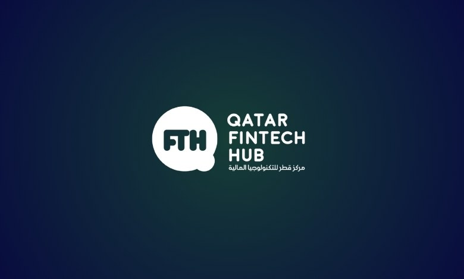
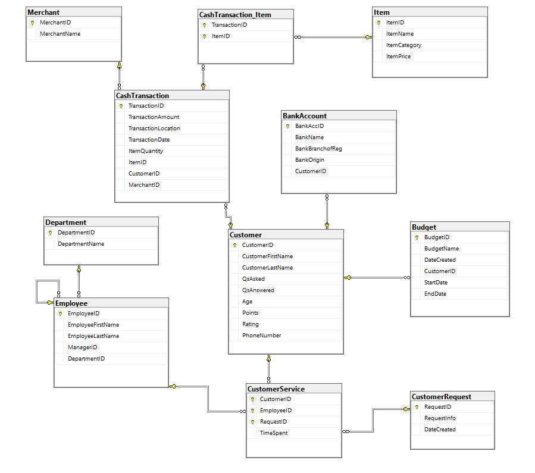

Case Study: Fintech Competition · 🥈 2nd Place
Fintrust: Personal Finance App Proposal
A fintech business case and database design for a personal finance advisory app, proposing a bank-linked budgeting platform with peer-to-peer financial guidance for the Qatari market.
Overview
Qatar didn't have its own platform for recording and analyzing personal transactions, and the market lacked a way to connect people who needed financial guidance with those who had it. Our five-person team proposed Fintrust: a mobile app that links directly to a user's bank account to unify budgeting, spending analysis, and peer-to-peer financial advice in one place. The proposal placed 2nd at the Qatar Development Bank Fintech Competition and won a monetary prize.
The Problem & Strategic Fit
Most people make a mix of major and minor financial decisions that add up over time, but have no easy way to track how those decisions connect to their actual bank balance, or to get advice from someone more financially literate. Qatar National Vision 2030 lists economic diversification as a core pillar, and fintech is one of the concrete ways the country is pursuing it, a point echoed publicly by QDB's Executive Director of Advisory and Incubation. Fintrust was designed to sit squarely in that gap: a platform that helps individuals manage their finances while giving Qatar's fintech sector another building block toward that diversification goal.
How Fintrust Works
- Bank-linked budgeting: users create budgets and log expenditures/revenue, with the app always reflecting the actual bank balance rather than a manually maintained estimate.
- Purchase-impact calculator: before a purchase, the app estimates payoff time and overall feasibility against the user's spending history, a personalization layer that improves after an initial 2-week data-gathering period.
- Spending-category insights: when users tag what they're buying, the app flags high-expenditure categories and, for things like cigarettes, suggests healthier alternative uses for that money.
- Peer-to-peer financial Q&A: users can ask and answer financial questions within the platform, with a points and rating system (built into the data model) to encourage participation from more financially literate users.
Business Case
We benchmarked Fintrust against the two realistic alternatives people already use:
- Fintrust: extremely convenient (mobile-first), minimal time required, minimal service charges.
- Hiring a financial advisor: less convenient (appointments required), a moderate time investment, and costly (~QAR 5,500 for a financial plan).
- Taking financial courses: moderately convenient, a significant time investment (classes, possibly exams), and costly.
Modeling 1,000 paying customers in year one (split evenly between monthly and yearly plans) projected ~QAR 275,000 in revenue; adding another 1,000 in year two would bring cumulative revenue to ~QAR 550,000. The biggest flagged risks were building customer trust as a new entrant and differentiating from existing competitors, alongside the reality that the product only creates value for users who are actually motivated to save.
Data & Database Design
Behind the product pitch was a full relational schema covering both customer-facing data (transactions, budgets, bank accounts, Q&A activity) and internal business data (employees, departments, merchants, customer service requests). Data would be collected two ways: manual entry by the user, and automatic entry pulled from linked bank accounts.

We also mapped the schema to real queries the app and its managers would actually run:
- User-facing operations: signup, adding bank details, recording cash transactions, asking/answering questions (updating a customer's points), creating budgets, and logging customer service requests.
- Management insight queries: customer growth over time, points generated per customer, average customer age, budgets created per user, average budget duration, which merchant has the most customers, and the most frequently recorded item category.